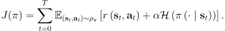
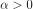
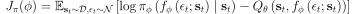
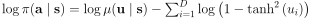
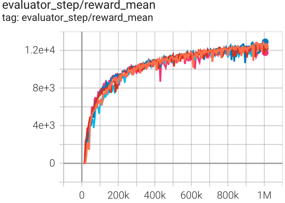
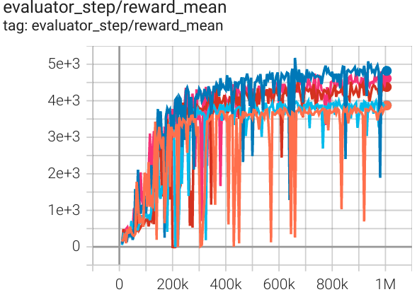

SAC¶
Overview¶
Soft actor-critic (SAC) is a stable and efficient model-free off-policy maximum entropy actor-critic algorithm for continuous state and action spaces, which is proposed in the 2018 paper Soft Actor-Critic: Off-Policy Maximum Entropy Deep Reinforcement Learning with a Stochastic Actor. The augmented entropy objective of the policy brings a number of conceptual and practical advantages including a more powerful exploration and the ability of the policy to capture multiple modes of near optimal behavior. The authors also showed that this method by combining off-policy updates with a stable stochastic actor-critic formulation, achieves state-of-the-art performance on a range of continuous control benchmark tasks, outperforming prior on-policy and off-policy methods.
Quick Facts¶
SAC is implemented for environments with continuous action spaces.(i.e. MuJoCo, Pendulum, and LunarLander)
SAC is an off-policy and model-free algorithm, combined with non-empty replay buffer for policy exploration.
SAC is a actor-critic RL algorithm, which optimizes actor network and critic network, respectively,
SAC is also implemented for multi-continuous action space.
Key Equations or Key Graphs¶
SAC considers a more general maximum entropy objective, which favors stochastic policies by augmenting the objective with the expected entropy of the policy:

The temperature parameters  controls the stochasticity of the optimal policy.
Soft Actor-Critic: Off-Policy Maximum Entropy Deep Reinforcement Learning with a Stochastic Actor considers a parameterized state value function, soft Q-function, and a tractable policy. Specifically, the value function and the soft Q-function are modeled as expressive neural networks, and the policy as a Gaussian with mean and covariance given by neural networks. In particular, SAC applies the reparameterization trick instead of directly minimizing the expected KL-divergence for policy parameters as

We implement reparameterization trick through configuring learn.reparameterization.
Note
Compared with the vanilla version modeling state value function and soft Q-function, our implementation contains two versions. One is modeling state value function and soft Q-function, the other is only modeling soft Q-function through double network.
Note
Soft Actor-Critic: Off-Policy Maximum Entropy Deep Reinforcement Learning with a Stochastic Actor considers a parameterized state value function, soft Q-function, and a tractable policy.
Our implementation contains two versions. One is modeling state value function and soft Q-function, the other is only modeling soft Q-function through double network.
We configure model.value_network, model.twin_q, and learn.learning_rate_value to switch implementation version.
Pseudocode¶

Note
Compared with the vanilla version, we only optimize q network and actor network in our second implementation version.
Extensions¶
- SAC can be combined with:
Auto alpha strategy
Reinforcement Learning with Deep Energy-Based Policies proposes entropy coefficient
 used to determine the relative importance of entropy and reward.
Extensive experiments conducted by Soft Actor-Critic: Off-Policy Maximum Entropy Deep Reinforcement Learning with a Stochastic Actor demonstrate Soft actor-critic is sensitive to reward scaling since it is related to the temperature of the optimal policy. The optimal reward scale varies between environments, and should be tuned for each task separately.
Since we implement auto alpha strategy depending on maximum entropy through configuring
used to determine the relative importance of entropy and reward.
Extensive experiments conducted by Soft Actor-Critic: Off-Policy Maximum Entropy Deep Reinforcement Learning with a Stochastic Actor demonstrate Soft actor-critic is sensitive to reward scaling since it is related to the temperature of the optimal policy. The optimal reward scale varies between environments, and should be tuned for each task separately.
Since we implement auto alpha strategy depending on maximum entropy through configuring learn.is_auto_alphaandlearn.alpha.
Implementation¶
The default config is defined as follows:
- class ding.policy.sac.SACPolicy(cfg: dict, model: Optional[Union[type, torch.nn.modules.module.Module]] = None, enable_field: Optional[List[str]] = None)[source]¶
- Overview:
Policy class of continuous SAC algorithm.
- Config:
ID
Symbol
Type
Default Value
Description
Other(Shape)
1
typestr
td3
RL policy register name, referto registryPOLICY_REGISTRYthis arg is optional,a placeholder2
cudabool
True
Whether to use cuda for network3
random_collect_sizeint
10000
Number of randomly collectedtraining samples in replaybuffer when training starts.Default to 10000 forSAC, 25000 for DDPG/TD3.4
model.policy_embedding_sizeint
256
Linear layer size for policynetwork.5
model.soft_q_embedding_sizeint
256
Linear layer size for soft qnetwork.6
model.value_embedding_sizeint
256
Linear layer size for valuenetwork.Defalut to None whenmodel.value_networkis False.7
learn.learning_rate_qfloat
3e-4
Learning rate for soft qnetwork.Defalut to 1e-3, whenmodel.value_networkis True.8
learn.learning_rate_policyfloat
3e-4
Learning rate for policynetwork.Defalut to 1e-3, whenmodel.value_networkis True.9
learn.learning_rate_valuefloat
3e-4
Learning rate for policynetwork.Defalut to None whenmodel.value_networkis False.10
learn.alphafloat
0.2
Entropy regularizationcoefficient.alpha is initiali-zation for autoalpha, whenauto_alpha is True11
learn.repara_meterizationbool
True
Determine whether to usereparameterization trick.12
learn.auto_alphabool
False
Determine whether to useauto temperature parameteralpha.Temperature parameterdetermines therelative importanceof the entropy termagainst the reward.13
learn.-ignore_donebool
False
Determine whether to ignoredone flag.Use ignore_done onlyin halfcheetah env.14
learn.-target_thetafloat
0.005
Used for soft update of thetarget network.aka. Interpolationfactor in polyak averaging for targetnetworks.
We take the second version implementation(only predict soft Q function) as an example to introduce SAC algorithm:
SAC model includes soft Q network and Policy network:
Initialization Model.
# build network self._policy_net = PolicyNet(self._obs_shape, self._act_shape, self._policy_embedding_size) self._twin_q = twin_q if not self._twin_q: self._soft_q_net = SoftQNet(self._obs_shape, self._act_shape, self._soft_q_embedding_size) else: self._soft_q_net = nn.ModuleList() for i in range(2): self._soft_q_net.append(SoftQNet(self._obs_shape, self._act_shape, self._soft_q_embedding_size)) Soft Q prediction from soft Q network:def compute_critic_q(self, inputs: Dict[str, torch.Tensor]) -> Dict[str, torch.Tensor]: action = inputs['action'] if len(action.shape) == 1: action = action.unsqueeze(1) state_action_input = torch.cat([inputs['obs'], action], dim=1) q_value = self._soft_q_net_forward(state_action_input) return {'q_value': q_value}Action prediction from policy network:
def compute_actor(self, obs: torch.Tensor, deterministic_eval=False, epsilon=1e-6) -> Dict[str, torch.Tensor]: mean, log_std = self._policy_net_forward(obs) std = log_std.exp() # unbounded Gaussian as the action distribution. dist = Independent(Normal(mean, std), 1) # for reparameterization trick (mean + std * N(0,1)) if deterministic_eval: x = mean else: x = dist.rsample() y = torch.tanh(x) action = y # epsilon is used to avoid log of zero/negative number. y = 1 - y.pow(2) + epsilon log_prob = dist.log_prob(x).unsqueeze(-1) log_prob = log_prob - torch.log(y).sum(-1, keepdim=True) return {'mean': mean, 'log_std': log_std, 'action': action, 'log_prob': log_prob}Note
SAC applys an invertible squashing function to the Gaussian samples, and employ the change of variables formula to compute the likelihoods of the bounded actions. Specifically, we use unbounded Gaussian as the action distribution through
Independent(Normal(mean, std), 1), which creates a diagonal Normal distribution with the same shape as a Multivariate Normal distribution. This is equal tolog_prob.sum(axis=-1). Then, the action is squashed by, and the log-likelihood of action has a simple form . In particular, the
stdin SAC is predicted from observation, which is different from PPO(learnable parameter) and TD3(heuristic parameter).
Entropy-Regularized Reinforcement Learning as follows:
Entropy in target q value.
# target q value. SARSA: first predict next action, then calculate next q value with torch.no_grad(): (mu, sigma) = self._learn_model.forward(next_obs, mode='compute_actor')['logit'] dist = Independent(Normal(mu, sigma), 1) pred = dist.rsample() next_action = torch.tanh(pred) y = 1 - next_action.pow(2) + 1e-6 # keep dimension for loss computation (usually for action space is 1 env. e.g. pendulum) next_log_prob = dist.log_prob(pred).unsqueeze(-1) next_log_prob = next_log_prob - torch.log(y).sum(-1, keepdim=True) next_data = {'obs': next_obs, 'action': next_action} target_q_value = self._target_model.forward(next_data, mode='compute_critic')['q_value'] # the value of a policy according to the maximum entropy objective if self._twin_critic: # find min one as target q value target_q_value = torch.min(target_q_value[0], target_q_value[1]) - self._alpha * next_log_prob.squeeze(-1) else: target_q_value = target_q_value - self._alpha * next_log_prob.squeeze(-1)Soft Q value network update.
# ================= # q network # ================= # compute q loss if self._twin_q: q_data0 = v_1step_td_data(q_value[0], target_value, reward, done, data['weight']) loss_dict['q_loss'], td_error_per_sample0 = v_1step_td_error(q_data0, self._gamma) q_data1 = v_1step_td_data(q_value[1], target_value, reward, done, data['weight']) loss_dict['q_twin_loss'], td_error_per_sample1 = v_1step_td_error(q_data1, self._gamma) td_error_per_sample = (td_error_per_sample0 + td_error_per_sample1) / 2 else: q_data = v_1step_td_data(q_value, target_value, reward, done, data['weight']) loss_dict['q_loss'], td_error_per_sample = v_1step_td_error(q_data, self._gamma) # update q network self._optimizer_q.zero_grad() loss_dict['q_loss'].backward() if self._twin_q: loss_dict['q_twin_loss'].backward() self._optimizer_q.step()Entropy in policy loss.
# compute policy loss policy_loss = (self._alpha * log_prob - new_q_value.unsqueeze(-1)).mean() loss_dict['policy_loss'] = policy_loss # update policy network self._optimizer_policy.zero_grad() loss_dict['policy_loss'].backward() self._optimizer_policy.step()Note
We implement reparameterization trick trough
. In particular, the gradient back propagation for
sigmais throughlog_probin policy loss.
Auto alpha strategy
Alpha initialization through log action shape.
if self._cfg.learn.is_auto_alpha: self._target_entropy = -np.prod(self._cfg.model.action_shape) self._log_alpha = torch.log(torch.tensor([self._cfg.learn.alpha])) self._log_alpha = self._log_alpha.to(device='cuda' if self._cuda else 'cpu').requires_grad_() self._alpha_optim = torch.optim.Adam([self._log_alpha], lr=self._cfg.learn.learning_rate_alpha) self._is_auto_alpha = True assert self._log_alpha.shape == torch.Size([1]) and self._log_alpha.requires_grad self._alpha = self._log_alpha.detach().exp()Alpha update.
# compute alpha loss if self._is_auto_alpha: log_prob = log_prob.detach() + self._target_entropy loss_dict['alpha_loss'] = -(self._log_alpha * log_prob).mean() self._alpha_optim.zero_grad() loss_dict['alpha_loss'].backward() self._alpha_optim.step() self._alpha = self._log_alpha.detach().exp()
Benchmark¶
environment |
best mean reward |
evaluation results |
config link |
comparison |
|---|---|---|---|---|
Halfcheetah (Halfcheetah-v3) |
12900 |
 | Spinning Up (13000) SB3(9535) Tianshou(12138) |
|
Walker2d (Walker2d-v2) |
5172 |
 | Spinning Up (5300) SB3(3863) Tianshou(5007) |
|
Hopper (Hopper-v2) |
3653 |

|
Spinning Up (3500) SB3(2325) Tianshou(3542) |
Reference¶
Haarnoja, et al. Soft Actor-Critic Algorithms and Applications. [https://arxiv.org/abs/1812.05905 arXiv:1812.05905], 2019.
Haarnoja, et al. Soft Actor-Critic: Off-Policy Maximum Entropy Deep Reinforcement Learning with a Stochastic Actor. [https://arxiv.org/abs/1801.01290 arXiv:1801.01290], 2018.